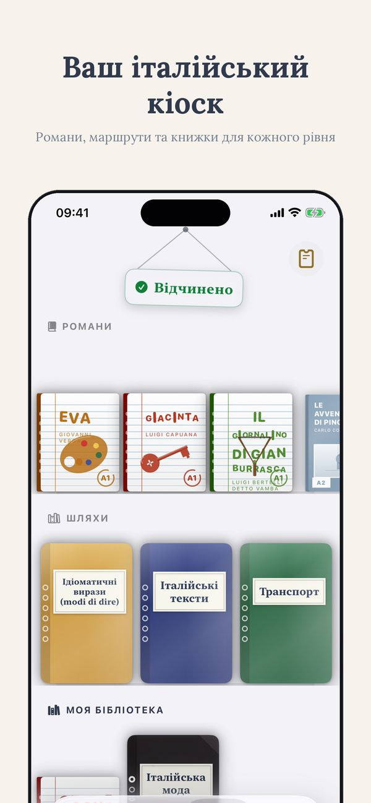
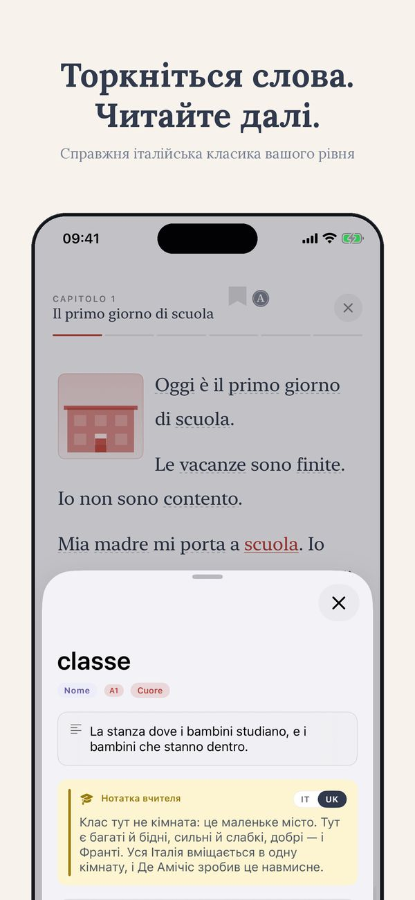
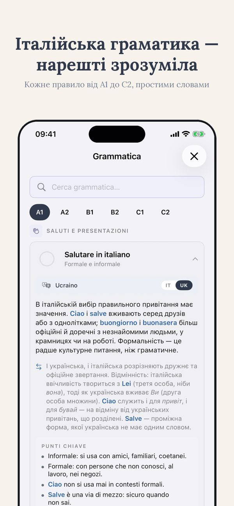
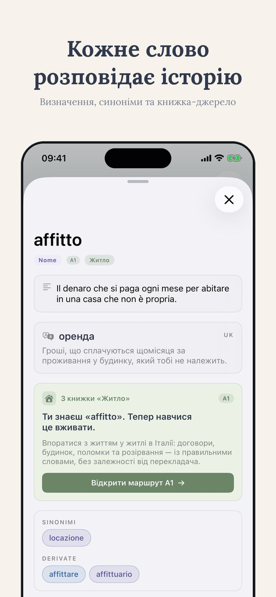
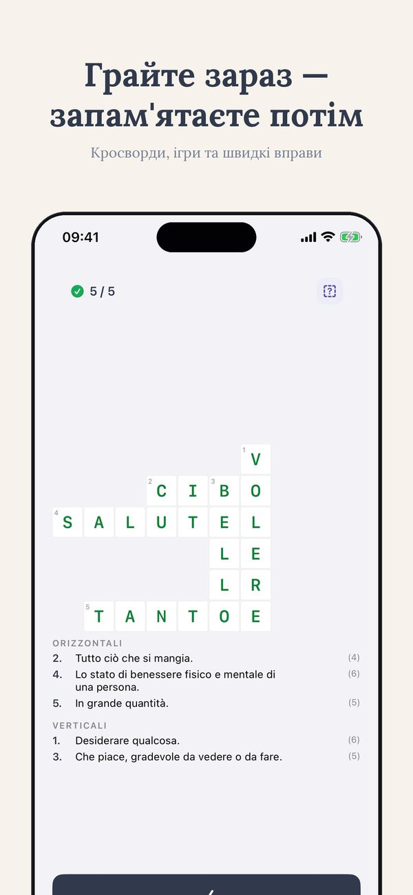

Безкоштовний тест рівня · Thuis Italiaans
Який у мене рівень італійської?
“Середній рівень” може означати п’ять різних речей. Ось як отримати справжню відповідь за шкалою A1-C2: самоперевірка за дві хвилини і безкоштовний тест, який вимірює чотири навички окремо.
Безкоштовно, близько 15 хвилин, результат одразу
Пройти тест рівняЩо означають рівні від A1 до C2
Запитайте п’ятьох людей, що таке “середній рівень італійської”, і отримаєте п’ять відповідей. Саме тому в Європі домовилися про спільну шкалу CEFR із шістьма рівнями від A1 до C2. Нею користуються всі серйозні курси, іспити та підручники. Одним рядком кожен:
- A1: ви впораєтеся з замовленням кави та знайомством.
- A2: ви даєте собі раду в усіх передбачуваних ситуаціях: магазин, запис до лікаря, розмова про свій день.
- B1: ви ведете справжню розмову, навіть коли вона виходить за звичний сценарій.
- B2: ви працюєте італійською і дивитесь телебачення без мук.
- C1: ви відчуваєте стилі та ідіоми; відкривається література.
- C2: майже як носій, ви розумієте жарти.
Отже, справжнє питання не “чи в мене середній рівень”, а “де саме я на цій шкалі, навичка за навичкою”.
Самоперевірка за дві хвилини
Перед будь-яким тестом спробуйте цей чесний список. Знайдіть останнє твердження, яке для вас правдиве:
- Я можу замовити їжу в ресторані й зрозуміти відповідь офіціанта: ви щонайменше на території A2.
- Я можу десять хвилин розповідати про свою роботу, і мене розуміють: приблизно B1.
- Я можу дивитися фільм без субтитрів у більшості сцен: приблизно B2.
- Я можу обстоювати свою думку й відчуваю різницю між формальною та неформальною італійською: приблизно C1.
Корисно, але грубо, і з відомим викривленням: ми судимо про себе за найкращою навичкою. І тут ми підходимо до справжньої проблеми.
Чотири навички не на одному рівні
Майже ніхто не “має B1”. У вас B1 у читанні, A2 в аудіюванні, A2 в говорінні та B1 у письмі, або інша комбінація. Читання зазвичай йде на рівень попереду, бо швидкість контролюєте ви. Аудіювання й говоріння відстають, бо справжні італійці не сповільнюються заради вас. Одна єдина мітка ховає саме ту інформацію, яка вам потрібна: над якою навичкою працювати.
Саме тому мій безкоштовний тест рівня вимірює чотири навички окремо. Він триває близько п’ятнадцяти хвилин, а результат ви бачите одразу: не літеру, а профіль.
П’ятнадцять хвилин, чотири навички, одна чітка відповідь
Безкоштовно, без стіни реєстрації перед результатом. Ви дізнаєтеся свій рівень за кожною навичкою й точку старту.
Безкоштовно, близько 15 хвилин, результат одразу
Пройти тест рівняЩо відкриває рівень і що робити далі
Рівень корисний лише тоді, коли він змінює ваші наступні кроки.
- Якщо ваша мета документи: для довгострокового permesso di soggiorno потрібен підтверджений A2, а для громадянства сертифікований рівень. Безкоштовний тест покаже, чи ви вже готові бронювати іспит, чи ці гроші краще вкласти в три місяці підготовки.
- Якщо ваша мета робота: рівень підкаже, що ви можете обіцяти на співбесіді й якого словника вам бракує: італійська для роботи тут.
- Обирайте матеріал свого рівня. Контент на рівень вищий найшвидше вбиває мотивацію. Почніть із безкоштовних вправ і шляху, який починається з вашого рівня, як у застосунку Ti.
- Повторюйте тест через три місяці, а не через три тижні. Раніше різниця вкладається в межі похибки будь-якого тесту.
Поширені питання
Наскільки точний онлайн-тест рівня?
Хороші тести визначають рівень із точністю до піврівня, цього достатньо, щоб обрати матеріал і точку старту. Розподіл за навичками важливіший за єдину мітку: він каже, над чим працювати, а не лише де ви є.
Читаю на B1, а говорю на A2. Який у мене рівень?
Обидва, і це нормально. Читання зазвичай йде попереду, бо темп контролюєте ви. Читайте матеріали B1, а час на практику вкладайте в говоріння, поки воно не вирівняється.
Як часто варто перескладати тест?
Не частіше ніж раз на три місяці. Раніше зміни менші за похибку тесту, а часті перескладання дають лише розчарування.
Не вгадуйте. Вимірюйте.
П’ятнадцять хвилин, чотири навички окремо, результат одразу. Далі вправи та шлях з того рівня, який справді ваш.
Безкоштовно, близько 15 хвилин, результат одразу
Пройти тест рівняSee Ti in action
The CEFR path, exercises, edicola and graded Italian classics — from A1 to C2, in 14 languages.






Більше від Thuis Italiaans
Книжки за рівнями · Уроки італійської онлайн · Понад 700 безкоштовних вправ